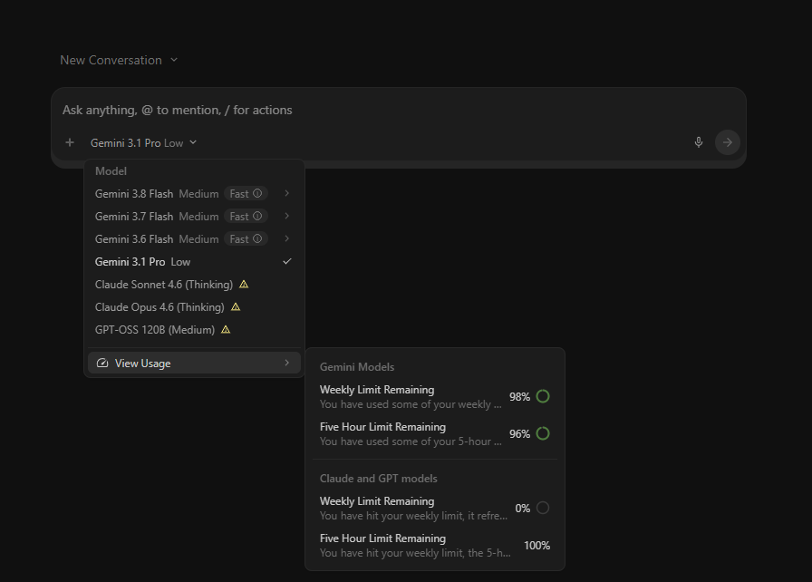
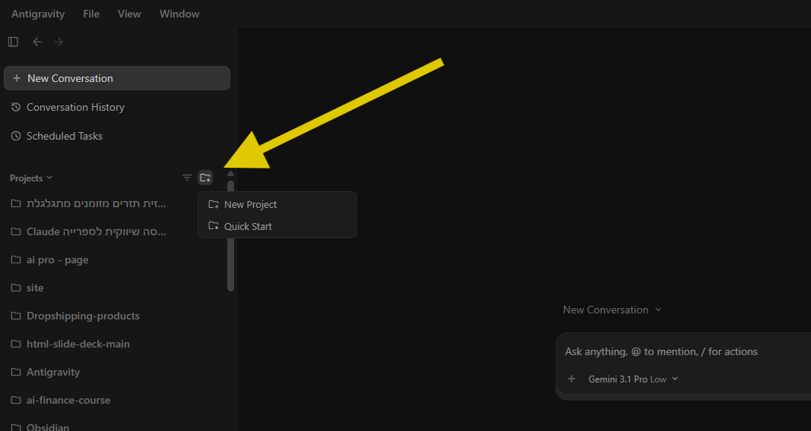
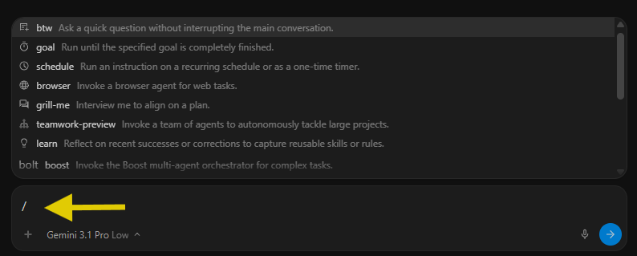
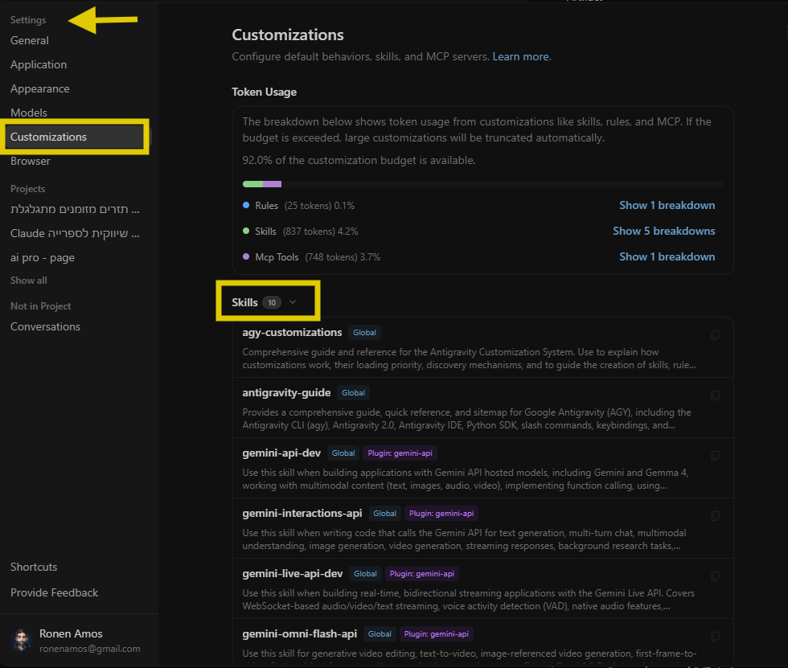
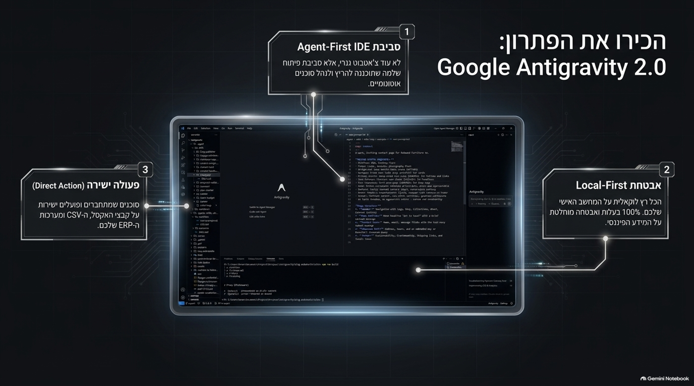
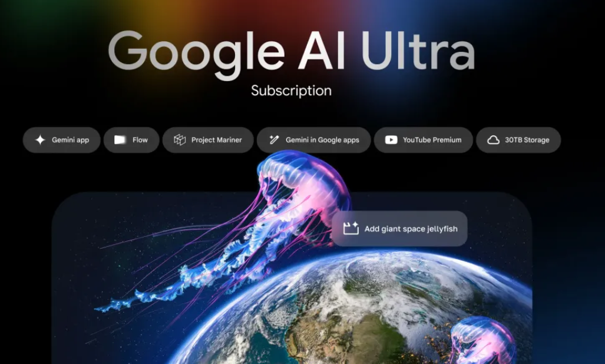

Antigravity לרואי חשבון וצוותי כספים
סביבת העבודה המודרנית של איש הכספים.
בוובינר זה נלמד כיצד להפוך את שולחן העבודה הפיננסי שלנו לאוטונומי, חכם ויעיל יותר בעזרת מנועי ה-AI המתקדמים ביותר.
רונן עמוס — רואה חשבון טכנולוגי
התחלתי כרו"ח קלאסי במשרד. בשנים האחרונות הבנתי שמהפכת ה-AI משנה לחלוטין את מקצוע הכספים — ומאז אני מלווה CFOs, חשבים וצוותי פיננסים בבניית סביבות עבודה חכמות.
CPA עם 10+ שנות ניסיון
ייעוץ כספי, ביקורת, דוחות — ועכשיו גם AI Workflows, אוטומציות ו-Low-Code לכספים.
AI Finance Transformation
ערוץ YouTube, קהילת WhatsApp, LinkedIn — תוכן שבועי בעברית על AI לכספים.
מהי בכלל מערכת Antigravity? ולמה להשתמש בה?
Antigravity אינה עוד צ'אטבוט – היא סביבת פיתוח ועבודה שלמה שנועדה לייעל תהליכים מורכבים.
סביבת עבודה מקומית ומאובטחת
האפליקציה יושבת על המחשב שלכם, ניגשת לקבצים המקומיים ופועלת בתוך ההקשר הארגוני שלכם. אין צורך להעתיק ולהדביק מידע סודי לאינטרנט.
אוטונומיה ו-Subagents
היכולת להריץ משימות ארוכות טווח, לפצל עבודה בין מספר סוכני-משנה, ולתת ל-AI לרוץ שעות ברקע בזמן שאתם מתפנים למשימות אחרות.
חיבור ישיר למערכות (MCP)
באמצעות טכנולוגיית MCP, אנו מחברים את Antigravity ישירות ל-ERP, למסדי הנתונים, ולכלים נוספים שמרכיבים את המערך הפיננסי שלנו.
שמירת נהלים (Skills)
הקניית "כישורים" וכללי אצבע לסוכן כך שילמד פעם אחת את נהלי סגירת החודש או בדיקת הדו"חות שלכם - ויבצע אותם באותה רמת דיוק בכל פעם מחדש.
איך זה עומד מול המתחרים?
Cursor, Claude Code, Copilot מול Antigravity
Cursor & Copilot
מיועד בעיקר למפתחים מתכנתים. כלים המשתלבים בתוך עורך הקוד (IDE). מעולים לכתיבת שורות קוד בודדות, אך פחות מתאימים לבניית תהליכי עבודה (Workflows) פיננסיים, אוטומציות ומשימות ארוכות טווח ללא קוד.
Claude Code
ממשק טרמינל (CLI). עוצמתי מאוד, אך חסר ממשק משתמש גרפי. דורש הבנה טכנית עמוקה יותר ופחות נגיש לאנשי כספים שלא רגילים לעבוד מול חלון פקודות שחור.
Antigravity
השילוב המנצח. אפליקציית דסקטופ (GUI) נוחה ואינטואיטיבית, המשלבת את העוצמה של AI סוכן אוטונומי, מערכת Skills לשימור נהלים, וניהול Tasks - המותאמת במיוחד לבניית סביבת עבודה לאנשי כספים ופיננסים.
איך מתחילים לעבוד עם Antigravity?
מדריך מעשי ל-5 הצעדים הראשונים בדרך לסביבת עבודה פיננסית אוטונומית.
שיחה ויצירת קשר עם ה-AI
העבודה השוטפת עם הסוכן מתבצעת במסך ה-Chat Canvas (הצ'אט המרכזי):
- הקשר מיידי (@): כדי למקד את ה-AI בחלקים מסוימים בקוד, השתמשו בתו `@` כדי לתייג קבצים, שיחות עבר או MCP ספציפיים.
- העלאת קבצים: ניתן לגרור ולהשליך קבצים, תמונות ומסמכים ישירות אל תוך חלון השיחה.
- פקודות מהירות (Slash Commands): הקלידו `/` כדי לפתוח תפריט פקודות מיוחדות, כמו `/goal` או `/browser`.
- השתמשו בתו `@` לא רק לקבצים בודדים אלא כדי לצרף שיחות עבר שלמות ולשמור על רצף מחשבתי מדויק.
- פקודת `/goal` היא כלי עוצמתי - נסחו את היעד בבהירות ותנו לסוכן לרוץ באופן עצמאי לאורך שעות עד להשלמתו המלאה.

התחלת פרויקט ובחירת תיקיית עבודה
הצעד הראשון לעבודה נכונה עם Antigravity הוא יצירת פרויקט (Project). הפרויקט מגדיר לסוכן ה-AI את סביבת העבודה (Workspace) שלו.
- ניהול פרויקטים: בסרגל הצד השמאלי של האפליקציה, לחצו על Projects.
- בחירת תיקייה: לחצו על הוספת פרויקט חדש ובחרו את התיקייה המקומית (Folder) שבה נמצא הקוד שלכם.
- החלפה קלה: ניתן להגדיר מספר רב של פרויקטים ולדלג ביניהם בקלות מתוך סרגל הצד.
- הקפידו לבחור את התיקייה הספציפית ביותר שנדרשת כדי למנוע עומס מידע על ה-AI.
- פתחו פרויקטים נפרדים עבור סביבות שונות לניהול הקשר יעיל יותר.

תזמון משימות אוטומטיות
אחד היתרונות הבולטים של Antigravity הוא היכולת להריץ סוכני AI ברקע באופן אוטומטי.
- מתוך סרגל הצד השמאלי, עברו ללשונית Scheduled Tasks.
- משימות חוזרות או טיימרים: ניתן להגדיר משימות שירוצו בזמנים קבועים.
- שימושים נפוצים: הפקת דוחות יומיים על חריגות, הרצת בדיקות אוטומטיות או ניטור סטטוס.
- השתמשו בטיימרים למשימות תחזוקה ליליות - כך תגיעו בבוקר לסביבת עבודה מעודכנת.
- ודאו שהסקריפטים שאתם מתזמנים כוללים טיפול נכון בשגיאות (Error Handling).

הוספת חיבורים והרחבות
כדי לאפשר לסוכן לתקשר עם שירותים חיצוניים, מסדי נתונים או מערכות ב-Production, הפלטפורמה מציעה מערכת הרחבות חזקה:
- MCP Servers: התקן המרכזי דרכו ה-AI מתחבר לכלים חיצוניים.
- ניהול הרחבות: תחת Skills & Customizations תוכלו לנהל את כל החיבורים.
- Skills & Rules: "כישורים" וחוקים שמלמדים את ה-AI דפוסי עבודה.
- חברו את הכלים הארגוניים שלכם (למשל Google Drive או מערכת ה-ERP) דרך MCP.
- בנו Skills ספציפיים לתהליכי עבודה קבועים בארגון (SOP).

הגדרות, אבטחה והרשאות
ל-Antigravity מנגנון אבטחה מתקדם המבטיח שה-AI פועל בגבולות הגזרה שהגדרתם לו:
- Global vs. Project Settings: במסך ה-Settings, ניתן לקבוע הגדרות כלליות, או לדרוס אותן לפרויקט ספציפי.
- אישורי ביצוע: תוכלו להחליט האם ה-AI רשאי להריץ פקודות (always-proceed) או חייב אישור (request-review).
- בקרת רשת וקבצים: ניתן להגביל גישה לקבצים מחוץ לתיקיית העבודה ולחסום גישה לאינטרנט.
- בסביבות ייצור, הגדירו תמיד את הפקודות הרגישות ל-`request-review` כדי שתוכלו לפקח.
- בפרויקטים שאינם בטוחים ב-100%, הגבילו את הרשאות האינטרנט של הסוכן.

הקלטת הוובינר המלאה
צפו בהקלטת הוובינר המלא ללמידה מעמיקה של 5 השלבים.
Google One AI Pro
ב-80% הנחה!
שדרגו את סביבת העבודה שלכם עם Google One AI Pro ל-18 חודשים. מנוע Gemini מתקדם, 5TB אחסון וליווי מקצועי בעברית - במחיר מיוחד ובתשלום חד-פעמי.
- ✓ 285 ₪ בלבד (במקום 1,299 ₪ מחיר רשמי)
- ✓ 5TB אחסון ענן ב-Google Drive
- ✓ תשלום חד-פעמי ללא חידוש אוטומטי
- ✓ ה-AI החזק ביותר זמין ישירות ב-Docs, Sheets ו-Gmail

שאלות וממשיכים להדגמה מעשית
נעבור עכשיו למסך של Antigravity ונראה איך זה נראה על קובץ פיננסי אמיתי — משיחה ראשונית ועד תוצר שאפשר להציג ולהשתמש בו.
למדריכים ותוכן נוסף
כל הכלים, הקהילה והמשאבים — במקום אחד.
מנוי לאתר AI Finance Transformation
מנוי אחד מעניק לך גישה מלאה לכל ספריית התכנים, הוובינרים, הפרומפטים וה-Skills שלי.
הצטרפו מ-ronenamoscpa.co.il ↗ 01 · COMMUNITYקהילת AI Finance
מעל 800 אנשי פיננסים שחולקים כלים, פרומפטים ו-Best Practices.
chat.whatsapp.com ↗ 02 · YOUTUBEערוץ YouTube הרשמי
הדגמות מעשיות, Walkthroughs ו-Playbooks מצולמים בלייב.
@AIFinanceTransformation ↗ 03 · COURSEקורס AI Finance Transformation
קורס מעשי מקיף לאנשי כספים, CFOs ורואי חשבון — מניתוחים ועד אוטומציות.
ronenamoscpa.co.il/courses ↗ 04 · PROMPT HUBSkill Vault
מאגר ה-Prompts וה-Skills המוכנים לשימוש מיידי במחלקת כספים.
Skill Vault ↗ 05 · THE BOOKAntigravity Playbook הספר המלא
המדריך המלא — Frameworks, Case Studies ותסריטי יישום לצוותים.
רכישה מאובטחת ↗